Creació d'usuaris i grups
En aquest apartat veurem com crear usuaris i grups dins del nostre Active Directory.
Per començar, obrim l’eina Usuaris i equips d’Active Directory. Ho podem fer escrivint usuaris al cercador del menú Inici i seleccionant l'opció corresponent.
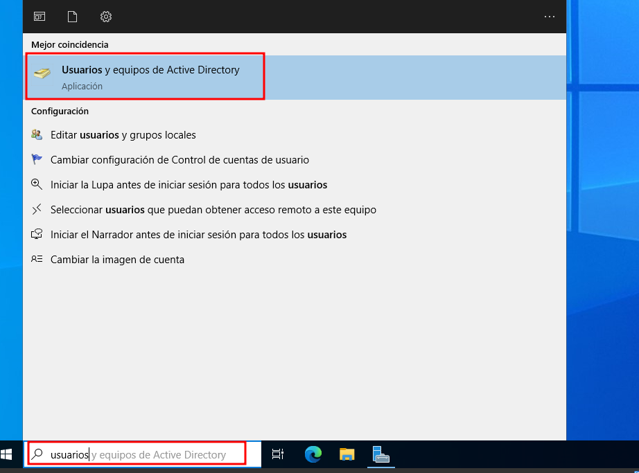
Aquesta és la consola principal des d’on podem gestionar tot el relacionat amb el domini: usuaris, grups, unitats organitzatives (OU), equips, etc.
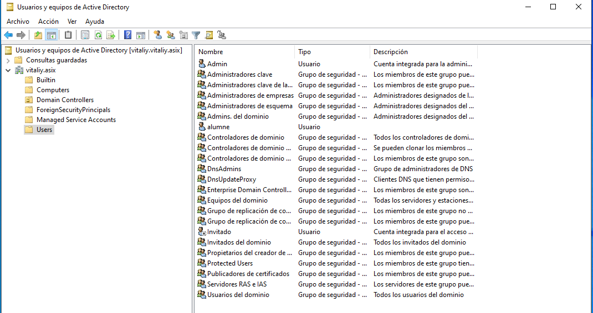
Creació d’un usuari bàsic
Per crear un usuari simple (sense OU ni grup específic), fem clic dret sobre la carpeta Users i seleccionem Nou > Usuari.
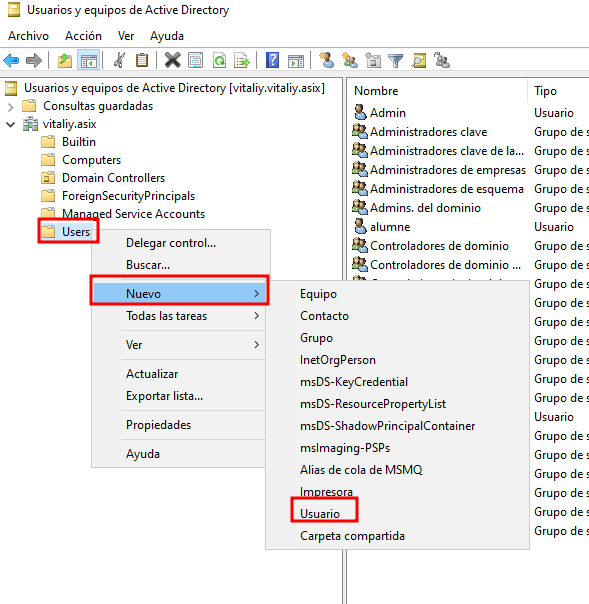
Omplim els camps amb el nom, cognoms i un nom d’usuari únic que servirà per iniciar sessió. Una bona pràctica si tens molts usuaris és posar la inicial del nom i el cognom (ex: jroca).
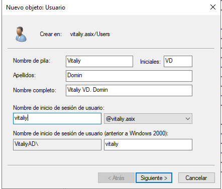
A continuació, se’ns demana definir una contrasenya per a l’usuari. També podem aplicar diverses opcions, com ara obligar a canviar-la en el proper inici de sessió (opció recomanada en entorns reals).
Per a aquesta pràctica ho desmarquem per evitar problemes d’oblit de contrasenyes.
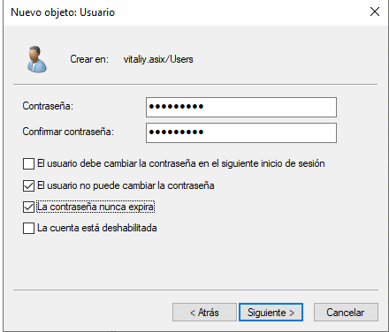
Vídeo demostratiu
Com que un vídeo val més que mil paraules, aquí tens una petita demostració de com es realitza l’inici de sessió amb l’usuari acabat de crear:
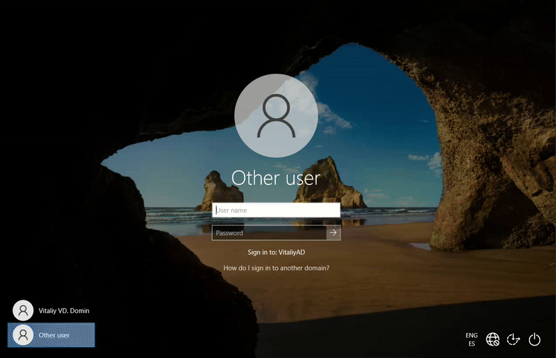
Creació de grups bàsics
Per crear un grup bàsic dins d’Active Directory, el procés és molt similar al de la creació d’usuaris.
Ens situem sobre la carpeta Users, fem clic dret i seleccionem Nou > Grup.
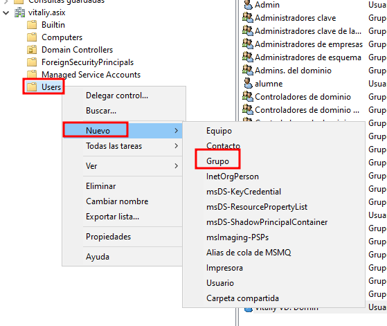
A la finestra que apareix, escrivim el nom del grup i seleccionem el tipus de grup. En aquest cas, el configurarem com a Grup de seguretat del domini local (tipus per defecte que serveix per controlar permisos i accés a recursos dins del domini).
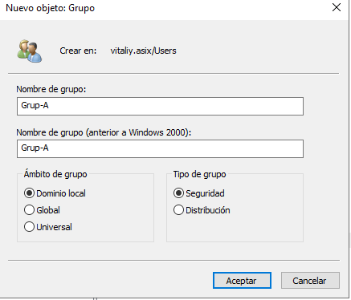
Un cop creat, si fem doble clic sobre el grup, s’obrirà la finestra de propietats. Des d’allà, podem accedir a la pestanya Membres i afegir-hi usuaris existents del domini.
Per exemple, podem afegir-hi l’usuari que hem creat anteriorment.
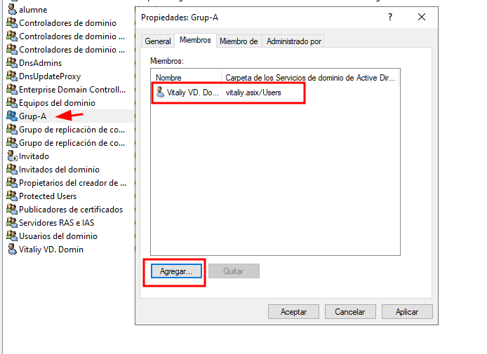
Restricció d’hores i dies per a un usuari
Per limitar l’accés d’un usuari a determinats dies i franges horàries, podem configurar les hores d’inici de sessió des de l’entorn d’Active Directory. Aquesta funcionalitat permet definir quan pot o no pot accedir un usuari al domini.
Per fer-ho, obrim Usuaris i equips del domini, fem clic dret sobre l’usuari que volem configurar i seleccionem Propietats.
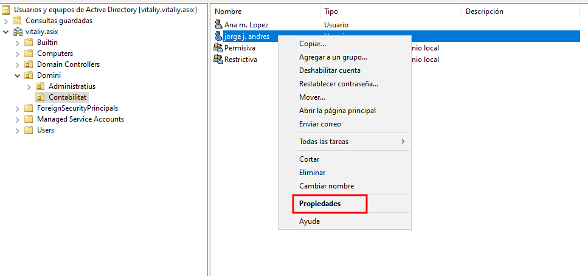
A la finestra de propietats, accedim a la pestanya Compte i fem clic al botó Hores d’inici de sessió.
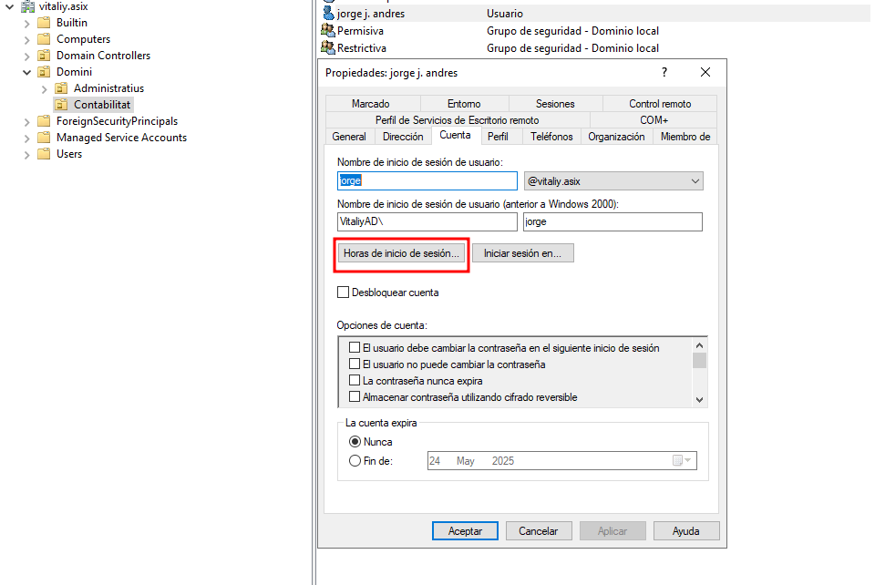
Es mostrarà una graella on cada quadrat representa una hora d’un dia. Els quadrats en blau indiquen que l’accés està permès; els en blanc indiquen que està denegat.
En aquest exemple, l’usuari pot iniciar sessió de dilluns a dissabte (excepte dijous i diumenge), entre les 8:00 i les 16:00 hores.
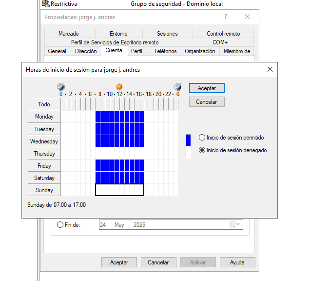
Si provem d’iniciar sessió amb aquest usuari fora de l’horari permès (per exemple, dijous a les 14:18), apareixerà un missatge indicant que no es pot iniciar sessió en aquest moment.
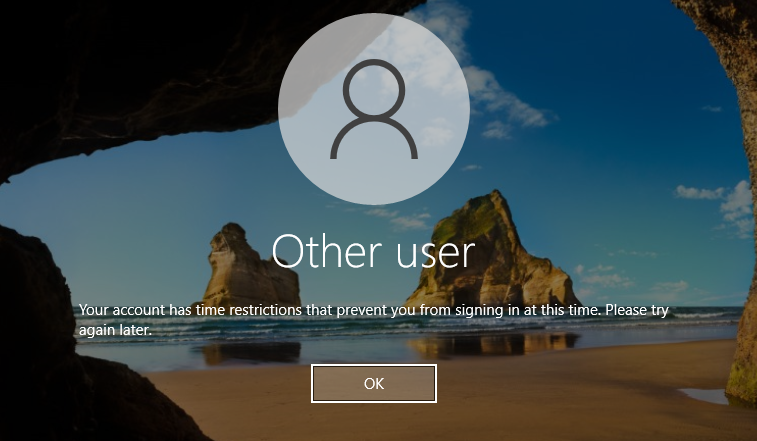
Quan un usuari ja està connectat i arriba el final del seu horari permès, no se’l desconnecta automàticament, però no podrà iniciar sessió de nou fins que torni a estar dins del seu horari autoritzat. Si es vol forçar el tancament de sessió fora d’horari, cal configurar-ho manualment mitjançant polítiques addicionals o scripts programats.
Afegir un usuari com a administrador local
Hi ha diverses maneres de fer que un usuari del domini sigui administrador local d’un equip. A continuació es mostren dues formes habituals de fer-ho: una gràfica i una per línia de comandes.
Una de les formes més completes és fer-ho remotament des del servidor, mitjançant la consola d’administració d’equips. Per obrir-la, es pot prémer Win + R, escriure compmgmt.msc i prémer Enter.
Un cop oberta l’eina, fem clic dret sobre Administració d’equips (local) i seleccionem Connecta’t a un altre equip.... Introduïm el nom de l’equip al qual volem connectar-nos (per exemple: NOM-PC o el nom dins del domini).
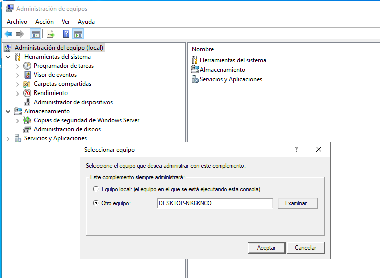
Quan es connecti correctament, veurem que podem gestionar aquest equip com si estiguéssim localment. Anem a:
Eines del sistema → Usuaris i grups locals → Grups
Busquem el grup Administradors, hi fem doble clic i cliquem el botó Afegeix.... Des d’aquí, podem afegir qualsevol usuari del domini que volem que tingui permisos d’administrador local.
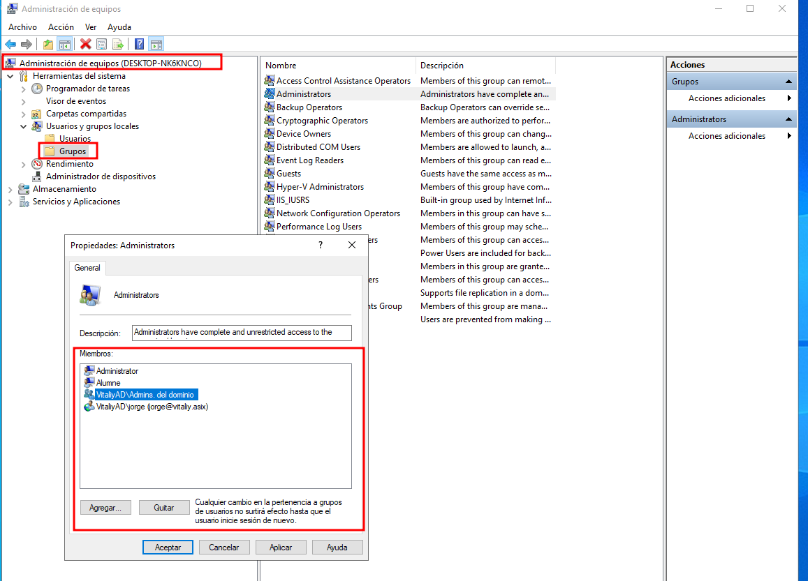
Una altra manera, molt més ràpida i eficaç, és fer-ho per CMD localment o via RDP, utilitzant la comanda següent amb una sessió d’administrador:
net localgroup Administradors "DOMINI\nomusuari" /add
Aquesta comanda afegeix el compte de domini especificat dins del grup d’administradors locals de l’equip. És una forma ideal per a administradors que prefereixen scripts o gestió ràpida.
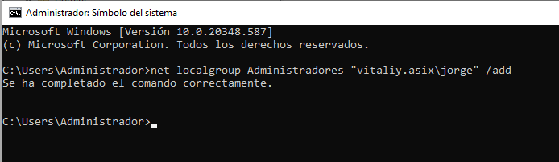